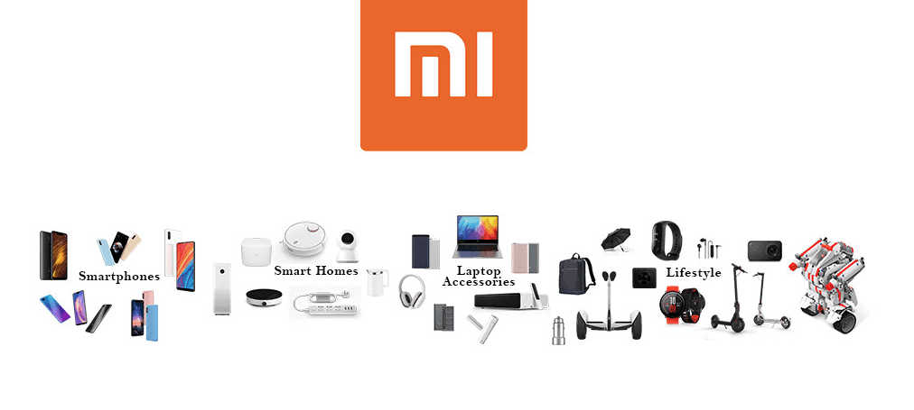

Participación de Mercado de Xiaomi en 2024
Xiaomi continúa expandiéndose en el mercado global con una creciente participación en diferentes regiones. A continuación, se muestra una tabla con los datos más recientes:
| Región |
Participación de Mercado (%) |
Posición en el Mercado |
| Asia |
31% |
2° |
| Europa |
25% |
3° |
| América Latina |
18% |
3° |
| África |
14% |
4° |
| América del Norte |
8% |
5° |
| Fuente: Reporte de Mercado Global 2024 |
Estos datos muestran cómo Xiaomi se posiciona estratégicamente en el mercado global, consolidándose como uno de los líderes en tecnología móvil.
Xiaomi y la Inteligencia Artificial
Xiaomi ha comenzado a integrar la inteligencia artificial en varios de sus dispositivos, mejorando la experiencia del usuario.
Xiaomi ha integrado la inteligencia artificial (IA) en el núcleo de su ecosistema, revolucionando la experiencia de los usuarios. Sus avances incluyen asistentes inteligentes como XiaoAI, que responde a comandos de voz y controla dispositivos IoT, y algoritmos avanzados en cámaras de smartphones para mejorar la calidad de las fotos mediante IA, como el modo nocturno y la detección de escenas.
Además, Xiaomi aplica IA en sus gadgets para optimizar la eficiencia, como en robots aspiradores que mapean espacios o en televisores inteligentes que ajustan automáticamente la calidad de imagen y sonido. También ha incursionado en robótica con productos como CyberDog, mostrando su compromiso con la innovación basada en IA.
"El Secreto del Éxito de Xiaomi: Innovación Accesible y Cercanía con sus Usuarios"
Algo interesante de Xiaomi es su modelo de negocio único: combina innovación tecnológica con precios accesibles. La compañía opera con un margen de ganancia muy reducido en hardware, confiando en sus ingresos por servicios digitales, aplicaciones y su ecosistema de dispositivos IoT.
Este enfoque le permite ofrecer productos de alta calidad, como smartphones avanzados, gadgets inteligentes y soluciones para el hogar, a precios competitivos. Además, Xiaomi utiliza activamente el feedback de su comunidad de usuarios para mejorar y personalizar sus productos, manteniendo una conexión directa con sus clientes y fomentando una base leal a nivel global.
